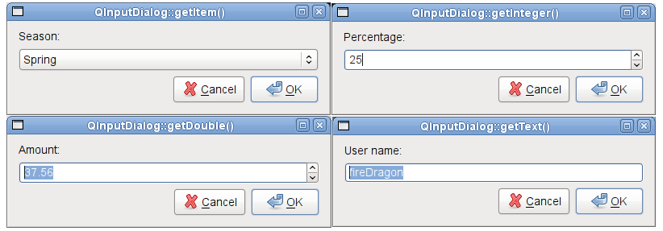

QInputDialog Class
The QInputDialog class provides a simple convenience dialog to get a single value from the user. More...
| Header: | #include <QInputDialog> |
| CMake: | find_package(Qt6 REQUIRED COMPONENTS Widgets) target_link_libraries(mytarget PRIVATE Qt6::Widgets) |
| qmake: | QT += widgets |
| Inherits: | QDialog |
- List of all members, including inherited members
- QInputDialog is part of Standard Dialogs.
Public Types
| enum | InputDialogOption { NoButtons, UseListViewForComboBoxItems, UsePlainTextEditForTextInput } |
| flags | InputDialogOptions |
| enum | InputMode { TextInput, IntInput, DoubleInput } |
Properties
|
|
Public Functions
| QInputDialog(QWidget *parent = nullptr, Qt::WindowFlags flags = Qt::WindowFlags()) | |
| virtual | ~QInputDialog() |
| QString | cancelButtonText() const |
| QStringList | comboBoxItems() const |
| int | doubleDecimals() const |
| double | doubleMaximum() const |
| double | doubleMinimum() const |
| double | doubleStep() const |
| double | doubleValue() const |
| QInputDialog::InputMode | inputMode() const |
| int | intMaximum() const |
| int | intMinimum() const |
| int | intStep() const |
| int | intValue() const |
| bool | isComboBoxEditable() const |
| QString | labelText() const |
| QString | okButtonText() const |
| void | open(QObject *receiver, const char *member) |
| QInputDialog::InputDialogOptions | options() const |
| void | setCancelButtonText(const QString &text) |
| void | setComboBoxEditable(bool editable) |
| void | setComboBoxItems(const QStringList &items) |
| void | setDoubleDecimals(int decimals) |
| void | setDoubleMaximum(double max) |
| void | setDoubleMinimum(double min) |
| void | setDoubleRange(double min, double max) |
| void | setDoubleStep(double step) |
| void | setDoubleValue(double value) |
| void | setInputMode(QInputDialog::InputMode mode) |
| void | setIntMaximum(int max) |
| void | setIntMinimum(int min) |
| void | setIntRange(int min, int max) |
| void | setIntStep(int step) |
| void | setIntValue(int value) |
| void | setLabelText(const QString &text) |
| void | setOkButtonText(const QString &text) |
| void | setOption(QInputDialog::InputDialogOption option, bool on = true) |
| void | setOptions(QInputDialog::InputDialogOptions options) |
| void | setTextEchoMode(QLineEdit::EchoMode mode) |
| void | setTextValue(const QString &text) |
| bool | testOption(QInputDialog::InputDialogOption option) const |
| QLineEdit::EchoMode | textEchoMode() const |
| QString | textValue() const |
Reimplemented Public Functions
| virtual void | done(int result) override |
| virtual QSize | minimumSizeHint() const override |
| virtual void | setVisible(bool visible) override |
| virtual QSize | sizeHint() const override |
Signals
| void | doubleValueChanged(double value) |
| void | doubleValueSelected(double value) |
| void | intValueChanged(int value) |
| void | intValueSelected(int value) |
| void | textValueChanged(const QString &text) |
| void | textValueSelected(const QString &text) |
Static Public Members
| double | getDouble(QWidget *parent, const QString &title, const QString &label, double value = 0, double min = -2147483647, double max = 2147483647, int decimals = 1, bool *ok = nullptr, Qt::WindowFlags flags = Qt::WindowFlags(), double step = 1) |
| int | getInt(QWidget *parent, const QString &title, const QString &label, int value = 0, int min = -2147483647, int max = 2147483647, int step = 1, bool *ok = nullptr, Qt::WindowFlags flags = Qt::WindowFlags()) |
| QString | getItem(QWidget *parent, const QString &title, const QString &label, const QStringList &items, int current = 0, bool editable = true, bool *ok = nullptr, Qt::WindowFlags flags = Qt::WindowFlags(), Qt::InputMethodHints inputMethodHints = Qt::ImhNone) |
| QString | getMultiLineText(QWidget *parent, const QString &title, const QString &label, const QString &text = QString(), bool *ok = nullptr, Qt::WindowFlags flags = Qt::WindowFlags(), Qt::InputMethodHints inputMethodHints = Qt::ImhNone) |
| QString | getText(QWidget *parent, const QString &title, const QString &label, QLineEdit::EchoMode mode = QLineEdit::Normal, const QString &text = QString(), bool *ok = nullptr, Qt::WindowFlags flags = Qt::WindowFlags(), Qt::InputMethodHints inputMethodHints = Qt::ImhNone) |
Detailed Description
The input value can be a string, a number or an item from a list. A label must be set to tell the user what they should enter.
Five static convenience functions are provided: getText(), getMultiLineText(), getInt(), getDouble(), and getItem(). All the functions can be used in a similar way, for example:
bool ok;
QString text = QInputDialog::getText(this, tr("QInputDialog::getText()"),
tr("User name:"), QLineEdit::Normal,
QDir::home().dirName(), &ok);
if (ok && !text.isEmpty())
textLabel->setText(text);
The ok variable is set to true if the user clicks OK; otherwise, it is set to false.

The Standard Dialogs example shows how to use QInputDialog as well as other built-in Qt dialogs.
See also QMessageBox and Standard Dialogs Example.
Member Type Documentation
enum QInputDialog::InputDialogOption
flags QInputDialog::InputDialogOptions
This enum specifies various options that affect the look and feel of an input dialog.
| Constant | Value | Description |
|---|---|---|
QInputDialog::NoButtons | 0x00000001 | Don't display OK and Cancel buttons (useful for "live dialogs"). |
QInputDialog::UseListViewForComboBoxItems | 0x00000002 | Use a QListView rather than a non-editable QComboBox for displaying the items set with setComboBoxItems(). |
QInputDialog::UsePlainTextEditForTextInput | 0x00000004 | Use a QPlainTextEdit for multiline text input. This value was introduced in 5.2. |
The InputDialogOptions type is a typedef for QFlags<InputDialogOption>. It stores an OR combination of InputDialogOption values.
See also options, setOption(), and testOption().
enum QInputDialog::InputMode
This enum describes the different modes of input that can be selected for the dialog.
| Constant | Value | Description |
|---|---|---|
QInputDialog::TextInput | 0 | Used to input text strings. |
QInputDialog::IntInput | 1 | Used to input integers. |
QInputDialog::DoubleInput | 2 | Used to input floating point numbers with double precision accuracy. |
See also inputMode.
Property Documentation
cancelButtonText : QString
This property holds the text for the button used to cancel the dialog
Access functions:
| QString | cancelButtonText() const |
| void | setCancelButtonText(const QString &text) |
comboBoxEditable : bool
This property holds whether or not the combo box used in the input dialog is editable
Access functions:
| bool | isComboBoxEditable() const |
| void | setComboBoxEditable(bool editable) |
comboBoxItems : QStringList
This property holds the items used in the combo box for the input dialog
Access functions:
| QStringList | comboBoxItems() const |
| void | setComboBoxItems(const QStringList &items) |
doubleDecimals : int
sets the precision of the double spinbox in decimals
Access functions:
| int | doubleDecimals() const |
| void | setDoubleDecimals(int decimals) |
See also QDoubleSpinBox::setDecimals().
doubleMaximum : double
This property holds the maximum double precision floating point value accepted as input
This property is only relevant when the input dialog is used in DoubleInput mode.
Access functions:
| double | doubleMaximum() const |
| void | setDoubleMaximum(double max) |
doubleMinimum : double
This property holds the minimum double precision floating point value accepted as input
This property is only relevant when the input dialog is used in DoubleInput mode.
Access functions:
| double | doubleMinimum() const |
| void | setDoubleMinimum(double min) |
doubleStep : double
This property holds the step by which the double value is increased and decreased
This property is only relevant when the input dialog is used in DoubleInput mode.
Access functions:
| double | doubleStep() const |
| void | setDoubleStep(double step) |
doubleValue : int
This property holds the current double precision floating point value accepted as input
This property is only relevant when the input dialog is used in DoubleInput mode.
Access functions:
| double | doubleValue() const |
| void | setDoubleValue(double value) |
Notifier signal:
| void | doubleValueChanged(double value) |
inputMode : InputMode
This property holds the mode used for input
This property helps determine which widget is used for entering input into the dialog.
Access functions:
| QInputDialog::InputMode | inputMode() const |
| void | setInputMode(QInputDialog::InputMode mode) |
intMaximum : int
This property holds the maximum integer value accepted as input
This property is only relevant when the input dialog is used in IntInput mode.
Access functions:
| int | intMaximum() const |
| void | setIntMaximum(int max) |
intMinimum : int
This property holds the minimum integer value accepted as input
This property is only relevant when the input dialog is used in IntInput mode.
Access functions:
| int | intMinimum() const |
| void | setIntMinimum(int min) |
intStep : int
This property holds the step by which the integer value is increased and decreased
This property is only relevant when the input dialog is used in IntInput mode.
Access functions:
| int | intStep() const |
| void | setIntStep(int step) |
intValue : int
This property holds the current integer value accepted as input
This property is only relevant when the input dialog is used in IntInput mode.
Access functions:
| int | intValue() const |
| void | setIntValue(int value) |
Notifier signal:
| void | intValueChanged(int value) |
labelText : QString
This property holds the label's text which describes what needs to be input
Access functions:
| QString | labelText() const |
| void | setLabelText(const QString &text) |
okButtonText : QString
This property holds the text for the button used to accept the entry in the dialog
Access functions:
| QString | okButtonText() const |
| void | setOkButtonText(const QString &text) |
options : InputDialogOptions
This property holds the various options that affect the look and feel of the dialog
By default, all options are disabled.
Access functions:
| QInputDialog::InputDialogOptions | options() const |
| void | setOptions(QInputDialog::InputDialogOptions options) |
See also setOption() and testOption().
textEchoMode : QLineEdit::EchoMode
This property holds the echo mode for the text value
This property is only relevant when the input dialog is used in TextInput mode.
Access functions:
| QLineEdit::EchoMode | textEchoMode() const |
| void | setTextEchoMode(QLineEdit::EchoMode mode) |
textValue : QString
This property holds the text value for the input dialog
This property is only relevant when the input dialog is used in TextInput mode.
Access functions:
| QString | textValue() const |
| void | setTextValue(const QString &text) |
Notifier signal:
| void | textValueChanged(const QString &text) |
Member Function Documentation
QInputDialog::QInputDialog(QWidget *parent = nullptr, Qt::WindowFlags flags = Qt::WindowFlags())
Constructs a new input dialog with the given parent and window flags.
[virtual noexcept] QInputDialog::~QInputDialog()
Destroys the input dialog.
[override virtual] void QInputDialog::done(int result)
Reimplements: QDialog::done(int r).
Closes the dialog and sets its result code to result. If this dialog is shown with exec(), done() causes the local event loop to finish, and exec() to return result.
See also QDialog::done().
[signal] void QInputDialog::doubleValueChanged(double value)
This signal is emitted whenever the double value changes in the dialog. The current value is specified by value.
This signal is only relevant when the input dialog is used in DoubleInput mode.
Note: Notifier signal for property doubleValue.
[signal] void QInputDialog::doubleValueSelected(double value)
This signal is emitted whenever the user selects a double value by accepting the dialog; for example, by clicking the OK button. The selected value is specified by value.
This signal is only relevant when the input dialog is used in DoubleInput mode.
[static] double QInputDialog::getDouble(QWidget *parent, const QString &title, const QString &label, double value = 0, double min = -2147483647, double max = 2147483647, int decimals = 1, bool *ok = nullptr, Qt::WindowFlags flags = Qt::WindowFlags(), double step = 1)
Static convenience function to get a floating point number from the user.
title is the text which is displayed in the title bar of the dialog. label is the text which is shown to the user (it should say what should be entered). value is the default floating point number that the line edit will be set to. min and max are the minimum and maximum values the user may choose. decimals is the maximum number of decimal places the number may have. step is the amount by which the values change as the user presses the arrow buttons to increment or decrement the value.
If ok is nonnull, *ok will be set to true if the user pressed OK and to false if the user pressed Cancel. The dialog's parent is parent. The dialog will be modal and uses the widget flags.
This function returns the floating point number which has been entered by the user.
Use this static function like this:
bool ok;
double d = QInputDialog::getDouble(this, tr("QInputDialog::getDouble()"),
tr("Amount:"), 37.56, -10000, 10000, 2, &ok,
Qt::WindowFlags(), 1);
if (ok)
doubleLabel->setText(QString("$%1").arg(d));
See also getText(), getInt(), getItem(), and getMultiLineText().
[static] int QInputDialog::getInt(QWidget *parent, const QString &title, const QString &label, int value = 0, int min = -2147483647, int max = 2147483647, int step = 1, bool *ok = nullptr, Qt::WindowFlags flags = Qt::WindowFlags())
Static convenience function to get an integer input from the user.
title is the text which is displayed in the title bar of the dialog. label is the text which is shown to the user (it should say what should be entered). value is the default integer which the spinbox will be set to. min and max are the minimum and maximum values the user may choose. step is the amount by which the values change as the user presses the arrow buttons to increment or decrement the value.
If ok is nonnull *ok will be set to true if the user pressed OK and to false if the user pressed Cancel. The dialog's parent is parent. The dialog will be modal and uses the widget flags.
On success, this function returns the integer which has been entered by the user; on failure, it returns the initial value.
Use this static function like this:
bool ok;
int i = QInputDialog::getInt(this, tr("QInputDialog::getInt()"),
tr("Percentage:"), 25, 0, 100, 1, &ok);
if (ok)
integerLabel->setText(tr("%1%").arg(i));
See also getText(), getDouble(), getItem(), and getMultiLineText().
[static] QString QInputDialog::getItem(QWidget *parent, const QString &title, const QString &label, const QStringList &items, int current = 0, bool editable = true, bool *ok = nullptr, Qt::WindowFlags flags = Qt::WindowFlags(), Qt::InputMethodHints inputMethodHints = Qt::ImhNone)
Static convenience function to let the user select an item from a string list.
title is the text which is displayed in the title bar of the dialog. label is the text which is shown to the user (it should say what should be entered). items is the string list which is inserted into the combo box. current is the number of the item which should be the current item. inputMethodHints is the input method hints that will be used if the combo box is editable and an input method is active.
If editable is true the user can enter their own text; otherwise, the user may only select one of the existing items.
If ok is nonnull *ok will be set to true if the user pressed OK and to false if the user pressed Cancel. The dialog's parent is parent. The dialog will be modal and uses the widget flags.
This function returns the text of the current item, or if editable is true, the current text of the combo box.
Use this static function like this:
QStringList items;
items << tr("Spring") << tr("Summer") << tr("Fall") << tr("Winter");
bool ok;
QString item = QInputDialog::getItem(this, tr("QInputDialog::getItem()"),
tr("Season:"), items, 0, false, &ok);
if (ok && !item.isEmpty())
itemLabel->setText(item);
See also getText(), getInt(), getDouble(), and getMultiLineText().
[static] QString QInputDialog::getMultiLineText(QWidget *parent, const QString &title, const QString &label, const QString &text = QString(), bool *ok = nullptr, Qt::WindowFlags flags = Qt::WindowFlags(), Qt::InputMethodHints inputMethodHints = Qt::ImhNone)
Static convenience function to get a multiline string from the user.
title is the text which is displayed in the title bar of the dialog. label is the text which is shown to the user (it should say what should be entered). text is the default text which is placed in the plain text edit. inputMethodHints is the input method hints that will be used in the edit widget if an input method is active.
If ok is nonnull *ok will be set to true if the user pressed OK and to false if the user pressed Cancel. The dialog's parent is parent. The dialog will be modal and uses the specified widget flags.
If the dialog is accepted, this function returns the text in the dialog's plain text edit. If the dialog is rejected, a null QString is returned.
Use this static function like this:
bool ok;
QString text = QInputDialog::getMultiLineText(this, tr("QInputDialog::getMultiLineText()"),
tr("Address:"), "John Doe\nFreedom Street", &ok);
if (ok && !text.isEmpty())
multiLineTextLabel->setText(text);
See also getInt(), getDouble(), getItem(), and getText().
[static] QString QInputDialog::getText(QWidget *parent, const QString &title, const QString &label, QLineEdit::EchoMode mode = QLineEdit::Normal, const QString &text = QString(), bool *ok = nullptr, Qt::WindowFlags flags = Qt::WindowFlags(), Qt::InputMethodHints inputMethodHints = Qt::ImhNone)
Static convenience function to get a string from the user.
title is the text which is displayed in the title bar of the dialog. label is the text which is shown to the user (it should say what should be entered). text is the default text which is placed in the line edit. mode is the echo mode the line edit will use. inputMethodHints is the input method hints that will be used in the edit widget if an input method is active.
If ok is nonnull *ok will be set to true if the user pressed OK and to false if the user pressed Cancel. The dialog's parent is parent. The dialog will be modal and uses the specified widget flags.
If the dialog is accepted, this function returns the text in the dialog's line edit. If the dialog is rejected, a null QString is returned.
Use this static function like this:
bool ok;
QString text = QInputDialog::getText(this, tr("QInputDialog::getText()"),
tr("User name:"), QLineEdit::Normal,
QDir::home().dirName(), &ok);
if (ok && !text.isEmpty())
textLabel->setText(text);
See also getInt(), getDouble(), getItem(), and getMultiLineText().
[signal] void QInputDialog::intValueChanged(int value)
This signal is emitted whenever the integer value changes in the dialog. The current value is specified by value.
This signal is only relevant when the input dialog is used in IntInput mode.
Note: Notifier signal for property intValue.
[signal] void QInputDialog::intValueSelected(int value)
This signal is emitted whenever the user selects a integer value by accepting the dialog; for example, by clicking the OK button. The selected value is specified by value.
This signal is only relevant when the input dialog is used in IntInput mode.
[override virtual] QSize QInputDialog::minimumSizeHint() const
Reimplements: QDialog::minimumSizeHint() const.
void QInputDialog::open(QObject *receiver, const char *member)
This function connects one of its signals to the slot specified by receiver and member. The specific signal depends on the arguments that are specified in member. These are:
- textValueSelected() if member has a QString for its first argument.
- intValueSelected() if member has an int for its first argument.
- doubleValueSelected() if member has a double for its first argument.
- accepted() if member has NO arguments.
The signal will be disconnected from the slot when the dialog is closed.
void QInputDialog::setDoubleRange(double min, double max)
Sets the range of double precision floating point values accepted by the dialog when used in DoubleInput mode, with minimum and maximum values specified by min and max respectively.
void QInputDialog::setIntRange(int min, int max)
Sets the range of integer values accepted by the dialog when used in IntInput mode, with minimum and maximum values specified by min and max respectively.
void QInputDialog::setOption(QInputDialog::InputDialogOption option, bool on = true)
Sets the given option to be enabled if on is true; otherwise, clears the given option.
See also options and testOption().
[override virtual] void QInputDialog::setVisible(bool visible)
Reimplements: QDialog::setVisible(bool visible).
[override virtual] QSize QInputDialog::sizeHint() const
Reimplements: QDialog::sizeHint() const.
bool QInputDialog::testOption(QInputDialog::InputDialogOption option) const
Returns true if the given option is enabled; otherwise, returns false.
See also options and setOption().
[signal] void QInputDialog::textValueChanged(const QString &text)
This signal is emitted whenever the text string changes in the dialog. The current string is specified by text.
This signal is only relevant when the input dialog is used in TextInput mode.
Note: Notifier signal for property textValue.
[signal] void QInputDialog::textValueSelected(const QString &text)
This signal is emitted whenever the user selects a text string by accepting the dialog; for example, by clicking the OK button. The selected string is specified by text.
This signal is only relevant when the input dialog is used in TextInput mode.